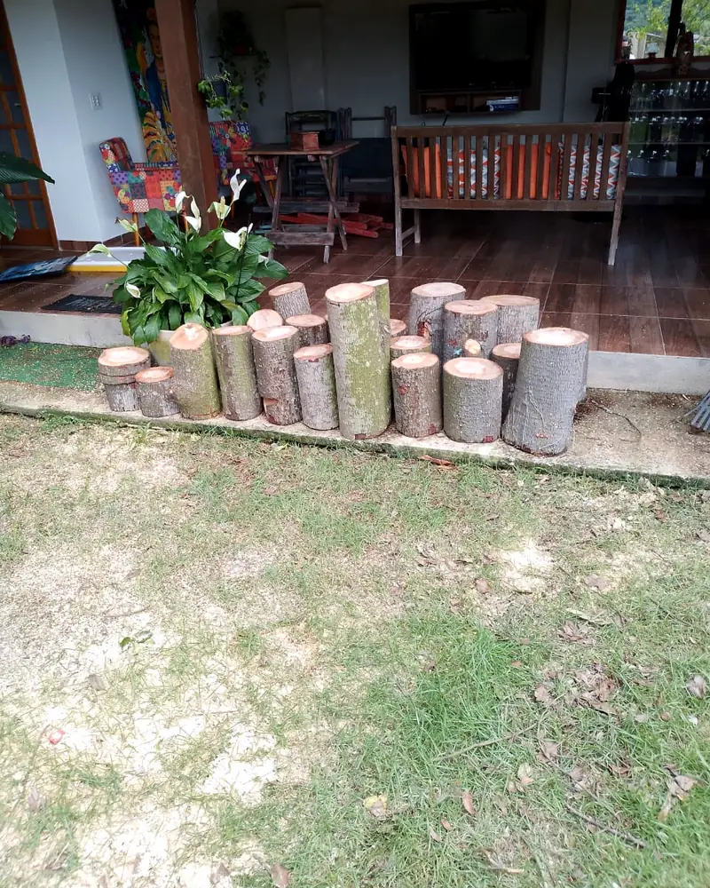

Poda preventiva
Indicada para manutenção planejada e condução adequada da árvore antes que surjam situações mais críticas.
Serviços especializados de poda, manejo, tratamento e remoção de árvores e palmeiras para residências, sítios, condomínios e empresas em todo o Estado do Rio de Janeiro.
Avaliação gratuita em Niterói, São Gonçalo, Maricá e Rio de Janeiro. Para outras localidades, consulte as condições.

Situações
Nem sempre é fácil saber quando uma árvore precisa de intervenção. Alguns sinais e situações indicam que vale buscar uma avaliação profissional.
Quando a árvore começa a interferir no espaço ao redor, é importante avaliar o que pode ser feito.
Alterações visíveis na estrutura da árvore merecem atenção e avaliação adequada.
Folhas, galhos, tronco ou copa podem apresentar sinais que justificam uma análise mais cuidadosa.
Eventos climáticos podem causar quebras, deslocamentos ou outras condições que exigem atenção mais rápida.
Não sabe exatamente o que está acontecendo? Envie fotos e conte a situação. A Curi avalia o caso e orienta os próximos passos.
Serviços
Cada árvore e cada local exigem uma avaliação própria. A Curi Arborismo atua com diferentes tipos de poda, manejo, tratamento e remoção, de acordo com a necessidade identificada no local.
Indicada para manutenção planejada e condução adequada da árvore antes que surjam situações mais críticas.
Remoção de galhos secos, comprometidos ou que demandem intervenção após avaliação técnica.
Intervenção na parte inferior da copa para melhorar a relação da árvore com áreas de circulação, construções ou outros elementos do entorno.
Redução controlada da altura da copa, quando tecnicamente indicada e viável para a condição da árvore.
Intervenções direcionadas à estrutura da copa para corrigir crescimento inadequado, conflitos ou necessidades específicas de manejo.
Atendimento para situações que exigem intervenção prioritária, conforme disponibilidade da equipe.
Avaliação e tratamento de problemas que podem afetar a saúde de árvores e palmeiras.
Retirada de folhas secas, bainhas e outros materiais, conforme a necessidade de cada palmeira.
Serviço realizado após avaliação das condições do local, viabilidade técnica e autorizações aplicáveis.

Lucas Curi atua diretamente com arboricultura há 5 anos, com experiência em diferentes cenários de poda, manejo e trabalho em altura.
Arborismo profissional
Trabalhar com árvores, especialmente em áreas urbanas, exige muito mais do que executar um corte. É preciso avaliar o ambiente, entender a estrutura da árvore e utilizar técnicas e equipamentos adequados para cada situação.
Cursos de NR 12 e NR 35 com foco em arboricultura e escalada em árvore.
Podas e manejos realizados conforme a ABNT NBR 16246-1.
A equipe trabalha com equipamentos próprios e específicos para execução dos serviços de arborismo.
Cada serviço considera as condições da árvore, do local e as exigências aplicáveis à intervenção.
Trabalhos realizados
Veja alguns dos serviços realizados pela Curi Arborismo em árvores e palmeiras de diferentes portes e condições.

 Antes
Antes
 Depois
Depois



Precisa de um serviço como esses? Envie algumas fotos e conte o que você precisa.
Quero avaliar meu casoComo funciona
O atendimento começa de forma simples: você explica a situação, envia as informações iniciais e a Curi orienta os próximos passos.
Entre em contato e envie fotos, localização e uma breve descrição da necessidade.
A Curi analisa as informações e, quando necessário, realiza uma visita técnica no local.
Com o serviço definido, você recebe o orçamento conforme as necessidades da operação.
Após a aprovação, o serviço é programado de acordo com a disponibilidade da equipe.
A equipe realiza o trabalho conforme o escopo combinado, incluindo a gestão dos resíduos quando prevista no orçamento.

Quem somos
Da agrofloresta à arboricultura urbana.
A trajetória de Lucas Curi começou na agrofloresta, em um trabalho que envolvia contato constante com árvores e podas em altura. Com o tempo, Lucas tomou gosto por esse tipo de atividade e passou a se envolver cada vez mais com o manejo e o trabalho técnico em árvores.
Ao perceber a demanda por serviços especializados em áreas urbanas, aprofundou sua atuação na arboricultura e se especializou em técnicas e sistemas mais complexos, próprios para as particularidades das cidades.
Hoje, a Curi Arborismo une conhecimento técnico, cuidado com as árvores e responsabilidade em cada operação.
Área de atendimento
A Curi Arborismo atende residências, incluindo sítios, condomínios e empresas em diferentes regiões do estado.
Avaliação para orçamento gratuita em
Para outras localidades, as condições da avaliação são consultadas conforme a distância e a necessidade do serviço. Quando houver custo de deslocamento para avaliação, esse valor poderá ser abatido do serviço contratado.
Informe sua localização e conte o que precisa para avaliarmos o atendimento.
Consultar atendimento na minha regiãoPerguntas frequentes
Reunimos algumas das principais questões que costumam surgir antes de contratar um serviço de arborismo.
Não. Você pode apresentar sua necessidade mesmo sem saber o nome do serviço. A Curi orienta sobre a intervenção mais adequada para o caso.
Não necessariamente. Cada situação precisa ser avaliada considerando as condições da árvore, do local e as autorizações aplicáveis.
Em alguns casos, pode ser necessária autorização do órgão público responsável. Antes da intervenção, verifique as exigências aplicáveis ao local e ao tipo de serviço.
Sim. A forma de retirada ou organização do material é combinada no orçamento, conforme a opção escolhida pelo cliente.
Começa com as informações enviadas por você. Quando necessário, uma visita técnica complementa essa análise.
Sim, em Niterói, São Gonçalo, Maricá e Rio de Janeiro. Em outras localidades, consulte as condições. Eventual custo de deslocamento poderá ser abatido do serviço contratado.
Contato
Conte o que está acontecendo e envie as informações iniciais para a Curi Arborismo.
Você pode falar direto pelo WhatsApp ou preencher o formulário abaixo.
Falar pelo WhatsAppAvaliação gratuita para Niterói, São Gonçalo, Maricá e Rio de Janeiro. Para outras localidades, consulte as condições.
Recebemos suas informações. A equipe da Curi Arborismo entrará em contato pelo WhatsApp informado.